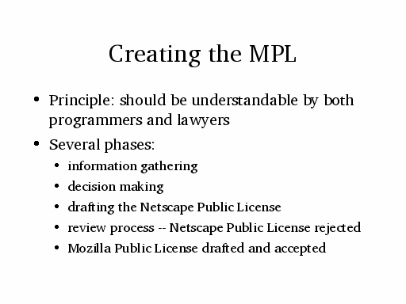

<?php

$html_title = 'Creating the  MPL';

$menu = array(
    'id' => 'default',
);

require_once "{$config['file_root']}/includes/header.inc.php"

?>

<center>
<a href="img0.html"></a> <a href="img8.html"></a> <a href="img10.html"></a> <a href="img14.html"></a> <a href="index.html"></a> <a href="text9.html"></a></center><br>
<center></center>


<?
require_once "{$config['file_root']}/includes/footer.inc.php"
?>
